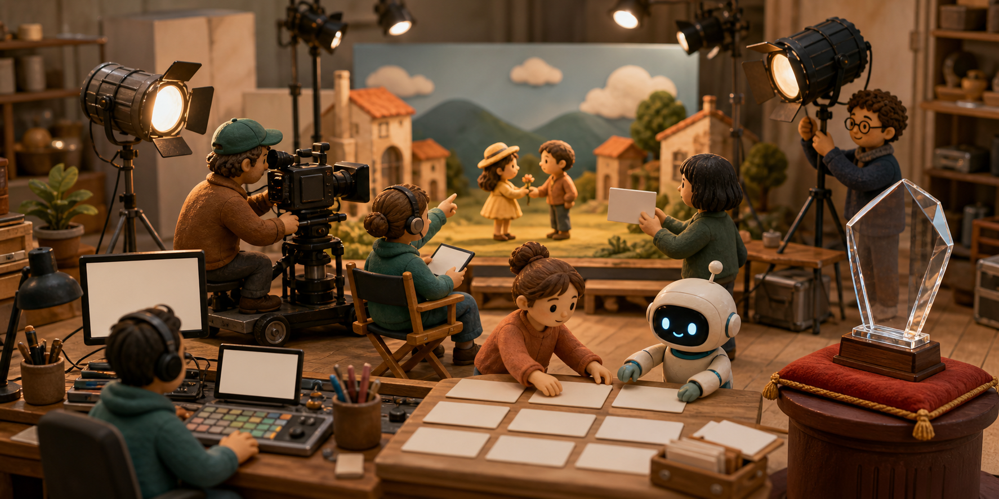

AI로 3분 영화 만들면 1등 50만 달러…힉스필드가 24일짜리 영화제를 열었다
AI 영상 제작 서비스 힉스필드가 총상금 100만 달러를 건 글로벌 AI 영화제를 열었다. 참가자는 24일 안에 3분 이상의 영화를 완성해야 하고, 1위 한 작품은 현금 50만 달러를 받는다. 픽사 공동창업자 에드윈 캣멀까지 심사에 참여한다. 짧은 AI 영상 한두 장면이 아니라 이야기와 편집을 갖춘 ‘영화’를 만들 수 있는지 시험하는 큰 공모전이다.

힉스필드는 글이나 이미지를 바탕으로 AI 영상을 만드는 온라인 제작 서비스다. 공식 공모전 페이지에 따르면 영화제는 2026년 8월 10일 시작됐고, 최종 제출 마감은 9월 3일 오후 11시 59분 미국 서부시간이다. 현재 서머타임을 적용하면 한국에서는 9월 4일 오후 3시 59분까지다. 심사와 후보 선정은 9월에 진행되고, 수상자는 10월 첫째 주에 발표될 예정이다.
총상금 100만 달러는 서비스 이용권이나 홍보용 포인트가 아니라 미국 달러로 지급하는 현금이다. 8월 10일 발효된 공식 규정에는 1위 50만 달러, 2위 20만 달러, 3위 10만 달러, 관객상 10만 달러가 적혀 있다. 장려상 10명에게도 각각 1만 달러가 돌아간다.
한 작품과 한 참가자 또는 팀은 하나의 상만 받을 수 있다. 상금도 결과 발표와 동시에 들어오는 것은 아니다. 수상자는 본인과 참가 자격을 확인받고 세금 서류와 지급 정보를 제출해야 하며, 돈은 그 절차가 끝난 뒤 최대 45일 안에 지급된다. 팀 상금은 팀장 한 사람에게 전달되고 내부 분배는 팀이 책임진다. 세금 역시 수상자가 부담한다.
100만 달러는 14개 작품에 이렇게 나뉜다
순위상과 관객상, 장려상은 중복 수상이 불가능해 상금이 서로 다른 14개 작품 또는 팀에 배분된다.
크레딧이 아니라 규정상 USD 현금 지급
검산: 50만 + 20만 + 10만 + 10만 + (1만 × 10) = 100만 달러, 총 14개 수상작.
상금보다 먼저 봐야 할 것: 24일 안에 3분짜리 완성본
참가 조건부터 보면 문턱은 높지 않다. 만 18세 이상 등록 사용자라면 개인 또는 최대 네 명의 팀으로 도전할 수 있다. 유료 구독은 참가나 수상의 필수 조건이 아니고, 출품 수에도 제한이 없다. 다만 여러 편을 내더라도 한 참가자나 한 팀이 받을 수 있는 상은 하나뿐이다.
문제는 제작 시간이다. 작품은 최소 3분이어야 하는데 준비 기간은 8월 10일부터 마감까지 24일뿐이다. 5분 이내를 권장하지만 더 길어도 참가 자격은 유지된다. 언어는 자유이며 영어 작품이 아니라면 영어 자막이나 영어 음성 해설을 붙여야 한다. 제출 파일은 MP4 또는 MOV, 최대 4K이고 화면비는 16:9 또는 21:9다.
새 AI 영상과 이미지는 모두 힉스필드의 전용 Cinema Studio 공모전 프로젝트 안에서 만들어야 한다. 쉽게 말해 다른 AI 서비스에서 미리 만든 장면을 가져와 이어 붙이면 안 된다. 힉스필드 안에서 제공하는 외부 회사 모델은 쓸 수 있지만, 다른 AI 플랫폼에서 생성한 영상이나 이미지를 들여오면 실격될 수 있다.
후반 작업까지 힉스필드에 묶이는 것은 아니다. 블렌더, 애프터이펙트, 다빈치 리졸브, 프리미어, 포토샵처럼 AI로 새 장면을 만들지 않는 도구는 사용할 수 있다. 편집, 합성, 색보정, 마스킹, 전통 3D 작업도 허용된다.
소리는 규칙이 더 엄격하다. 음악과 목소리뿐 아니라 립싱크, 대사, 효과음까지 모두 AI로 만들어야 한다. 본인이 작곡한 음악, 정식 라이선스를 구입한 스톡 음악, 직접 녹음한 목소리와 악기도 사용할 수 없다. 어떤 AI 오디오 도구를 썼는지 나중에 증명할 자료도 남겨야 한다.
내 얼굴도, 유명인의 목소리도 쓸 수 없다
화면과 목소리에 실제 사람이 등장해서도 안 된다. 본인, 팀원, 가족, 친구, 유명인, 역사 인물까지 식별할 수 있는 실존 인물은 모두 금지 대상이다. 직접 촬영한 영상은 물론 AI로 만든 얼굴, 그림, 애니메이션, 복제 음성도 포함된다. 당사자가 동의해도 허용되지 않으므로 등장인물과 목소리는 완전히 가상으로 만들어야 한다.
실제 아동도 등장할 수 없다. 가상의 아동 캐릭터는 제한적으로 허용되지만 성적이거나 착취적인 상황, 유해한 상황, 심각한 폭력과 학대 장면에는 넣을 수 없다. 정치 선전, 종교적 주장, 허가받지 않은 브랜드·캐릭터·음악, 실제 인물을 향한 폭력도 실격 대상이다.
완성본에는 공식 힉스필드 워터마크와 팩샷을 넣어야 한다. 같은 영화를 인스타그램, 유튜브, X, 레딧 가운데 한 곳의 공개 계정에도 올리고 링크를 제출해야 한다. 영화제가 끝날 때까지 로그인 없이 볼 수 있어야 한다. 조회수와 팔로워 수는 배심 점수가 아니지만, 공개 게시 자체는 반드시 해야 한다.
작품은 내 것이지만, 제작 과정까지 공개된다
공식 페이지는 힉스필드가 제공하는 예시 프로젝트 세 편을 ‘오픈소스 AI 영화’라고 부른다. 이 세 프로젝트는 캔버스, 프롬프트, 이미지와 영상 자산을 열어 다른 참가자가 활용할 수 있게 했다. 그렇다고 모든 일반 참가작을 누구나 자유롭게 복사하고 재사용할 수 있다는 뜻은 아니다.
전체 규정에는 마감 뒤 모든 적격 프로젝트의 완성 영화, 프롬프트, 생성 기록, 프로젝트 안의 자산이 누구나 볼 수 있게 된다고 적혀 있다. 동시에 작품 저작권은 창작자에게 남는다. 다른 사람에게 보인다는 것과 법적으로 자유롭게 다시 써도 된다는 것은 다르다.
창작자가 힉스필드에 허용하는 범위는 넓다. 힉스필드는 영화 전체와 일부, 스틸, 클립, 생성 기록을 영화제 운영과 향후 행사, 보도 자료, 소셜 채널에 쓸 수 있다. 제품 소개, 랜딩 페이지, 발표, 콘퍼런스, 유료 광고에도 영구적이고 취소 불가능한 비독점 라이선스로 활용할 수 있다. 공개하기 곤란한 콘셉트나 고객 자산을 넣으려는 사람은 상금보다 이 조항을 먼저 확인해야 한다.
힉스필드의 일반 이용약관도 서비스 콘텐츠가 지식재산권으로 보호되며, 사용자는 제한된 접근·사용 권한만 받는다고 설명한다. 이 기사에서 공식 페이지의 심사위원 초상과 영화 스틸을 가져오지 않은 이유도 여기에 있다. 사진에 출처가 표시돼 있어도 재게시 허가까지 받은 것은 아니기 때문이다.
쉽게 줄이면 이렇다. 참가자는 24일 안에 힉스필드 안에서 영상과 이미지를 만들고, AI로 만든 소리를 붙여 3분 이상의 영화로 완성한 뒤 공개 계정에 올려야 한다. 실제 사람과 기존 음악은 쓸 수 없고, 프로젝트의 제작 기록도 나중에 공개된다.
심사위원은 ‘AI 티’보다 영화 완성도를 본다
심사 기준은 연출과 스토리텔링, 시각적 완성도, 사운드와 편집, 독창성과 콘셉트 등 네 항목이다. 예쁜 장면 한 컷보다 이야기가 이어지는지, 화면과 소리가 한 편의 영화처럼 맞물리는지를 본다는 뜻이다. 조회수나 팔로워 수는 심사위원 평가 기준에 들어가지 않는다.
가장 알려진 심사위원은 에드윈 ‘에드’ 캣멀이다. 그는 픽사 공동창업자이자 전 픽사·월트디즈니 애니메이션 스튜디오 사장이다. 컴퓨터역사박물관의 경력 소개는 캣멀이 다섯 차례 아카데미 영예를 받았고 2019년 튜링상을 받았다고 설명한다. 미국 영화예술과학아카데미도 컴퓨터 그래픽과 영화 기술에 기여한 그에게 2009년 고든 E. 소여상을 수여했다고 기록했다.
공모전 페이지에 적힌 ‘오스카 5회 수상자’를 작품상이나 감독상을 다섯 번 받았다는 뜻으로 이해하면 틀린다. 기술·과학 업적과 특별 공로를 포함한 아카데미의 영예를 가리킨다. 캣멀은 예술가와 엔지니어가 함께 장편 애니메이션을 만드는 제작 시스템을 구축한 인물이라는 점에서 이번 심사와 연결된다.
촬영감독 페돈 파파미하일도 심사한다. 그는 네브래스카와 트라이얼 오브 더 시카고 7로 아카데미 촬영상 후보에 올랐다. 미국촬영감독협회에서는 행복을 찾아서, 포드 V 페라리, 사이드웨이를 비롯한 주요 촬영작도 확인할 수 있다. AI 영상에서 자주 어긋나는 구도, 빛, 인물 시선의 연결을 살필 수 있는 전문가다.
영화감독 폴 W. S. 앤더슨은 대중성과 장르 영화의 완성도를 본다. 그는 모탈 컴뱃, 레지던트 이블, 에이리언 대 프레데터를 연출했다. 영국영화협회는 레지던트 이블 영화 시리즈의 전 세계 흥행이 10억 달러를 넘었다고 설명한다. 공모전 측이 그를 ‘10억 달러 프랜차이즈 감독’으로 소개한 이유다.
도전 전에 확인할 제작 경로
한국 참가자가 가장 자주 놓칠 수 있는 마감 시각, 생성 위치, 오디오, 공개 조건을 한 흐름으로 묶었다.
권리 조건: 저작권은 창작자에게 남지만, 힉스필드는 작품·스틸·클립·생성 기록을 영화제와 제품 홍보 및 유료 광고에 영구적으로 사용할 수 있는 비독점 라이선스를 받는다.
기술·촬영·상업영화, 서로 다른 세 개의 시선
초상사진 대신 공식 발표와 독립 기관에서 확인되는 경력만으로 심사위원의 평가 관점을 정리했다.
픽사 공동창업자
전 픽사·디즈니 애니메이션 사장
2019 튜링상
제작 기술과 창작 시스템의 결합
아카데미 촬영상 2회 후보
Nebraska
The Trial of the Chicago 7
빛·구도·촬영 연속성
Mortal Kombat
Resident Evil
Alien vs. Predator
장르 문법과 대중적 완성도
유명 심사위원 세 명이 참여한다고 해서 전통 영화계 전체가 AI 영화를 공식 승인했다고 볼 수는 없다. Creative Bloq는 캣멀의 심사 참여가 애니메이션 업계의 반발과 논쟁을 다시 불렀다고 보도했다. 힉스필드가 자사 도구로 만든 작품을 모아 서비스까지 알리는 행사라는 점도 함께 봐야 한다.
한국 제작자가 참가 전에 판단할 세 가지
첫째, 지역 제한이 거의 없고 영어 영화만 받는 대회도 아니다. 한국어 대사에 영어 자막을 붙여 제출할 수 있고, 혼자서도 참가할 수 있다. 1위 50만 달러는 독립 제작자가 다음 장편 프로젝트를 준비할 만큼 큰 돈이며, 장려상도 열 팀에게 돌아간다.
둘째, 24일 동안 캐릭터와 배경이 흔들리지 않는 3분 이상의 영화를 만드는 일은 짧은 바이럴 영상 제작과 다르다. 원하는 장면이 나올 때까지 반복 생성하는 비용, 앞뒤 장면 연결, 사운드 설계, 자막, 최종 편집까지 관리해야 한다. 좋은 프롬프트 몇 줄보다 제작 계획이 결과를 가를 가능성이 높다.
셋째, 출품과 관객상 투표의 결제 조건이 다르다. 작품을 내는 데 유료 구독은 필요 없지만, 후보 공개 뒤 관객상에 투표하려면 투표 시점에 활성 유료 구독 중인 힉스필드 사용자여야 한다. 배심상과 장려상은 같은 후보 목록을 놓고 심사위원이 앞서 설명한 네 가지 기준으로 평가한다.
이 영화제의 핵심은 100만 달러라는 숫자만이 아니다. AI 영상이 ‘신기한 한 장면’을 보여주는 단계를 넘어, 3분 이상 이어지는 이야기와 소리, 편집을 갖춘 영화로 평가받기 시작했다. 도전하려는 사람은 큰 상금과 유명 심사위원만 보지 말고, 작품과 제작 기록이 공개되고 힉스필드의 마케팅에도 영구적으로 쓰일 수 있다는 조건까지 받아들일 수 있는지 먼저 판단해야 한다.
더 확인할 자료
- Higgsfield Global Film Festival 공식 페이지와 전체 규정
- Higgsfield 이용약관
- Computer History Museum: Ed Catmull
- Academy of Motion Picture Arts and Sciences: Ed Catmull
- American Society of Cinematographers: Phedon Papamichael
- Phedon Papamichael 공식 경력
- British Film Institute: Paul W. S. Anderson
- Creative Bloq: 에드 캣멀 심사 참여와 업계 논쟁